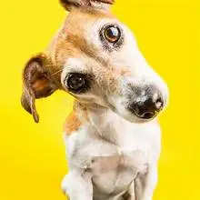
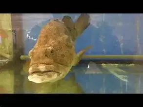

[second part of the midterm]
|
 |
 |
| Funny Cat |
Curious Dog |
Random Bored Fish |
| 2015, an exhibition called "How Cats Took Over The Internet" opened at the Museum of the Moving Image
in New York.The exhibition "looks at the history of how they rose to internet fame, and why people like them so much".
|
A study by Harvard D.O.G.S. concluded that dogs are curious in nature. Dogs love to learn new things and may even enjoy reading the
VI Daily News
|
After years of swimming at Trunk Bay this colorful tiny fish got really bored of it and decided to swim to Magens Bay.
It took her a whopping 5 months and 29 days to reach.
|
Pet Photography Tips and Tricks
Great pet photography is about volume. You’ll need to take lots of pictures, and there will be plenty of duds, but among all
those pics will be some gems. Here are more professional pet photography tips:
-
Get down to your pet’s level. Crouch down or lie on the floor rather than taking the photo from high overhead.
And try a few shots where you get in close. If your pet is apt to back away, move in gradually with a treat ready
or use a telephoto lens.
-
Focus on the eyes. The eyes are the window to the soul.
Sounds corny but focusing on your pet’s eyes can help create an
emotional connection with your viewer.
-
Avoid busy backgrounds. Be thoughtful about what’s behind and around your pet. You want your pet to be the center of attention.
Plain white walls, a large patch of green grass, or a light or dark solid carpet to contrast your pet’s coat are all great options.
-
Use natural light. Lots of natural light is best for pets who may get skittish around a flash.
You can take photos of your dog outside or of your cat near a big sunny window.